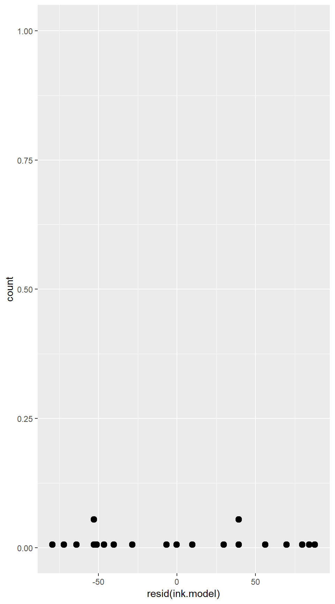
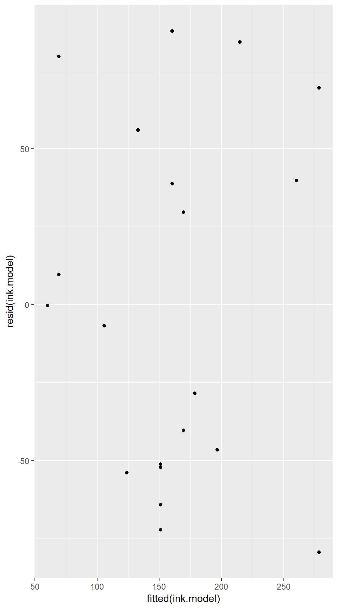
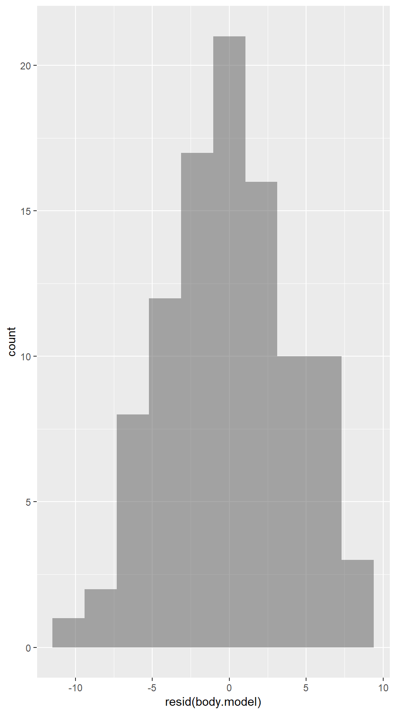
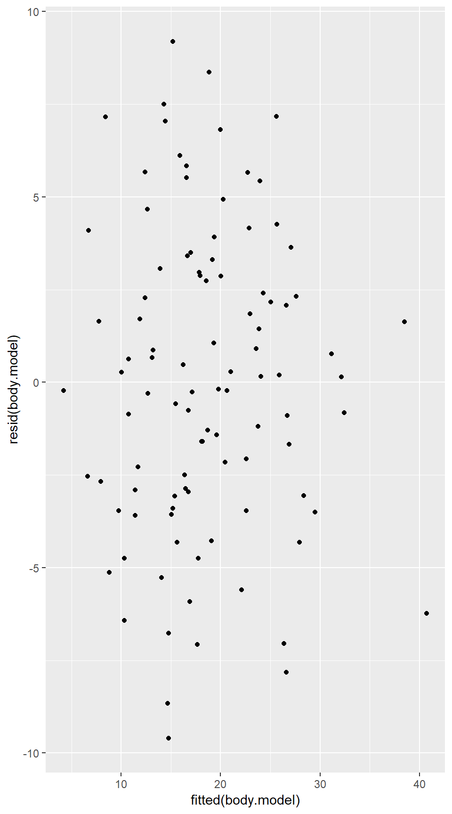
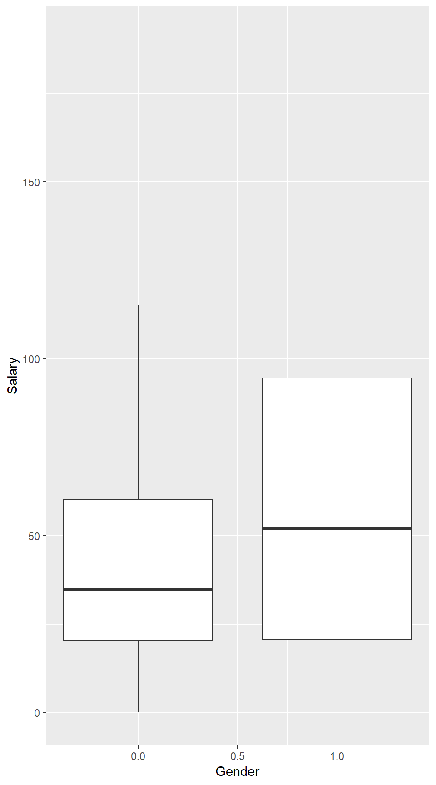
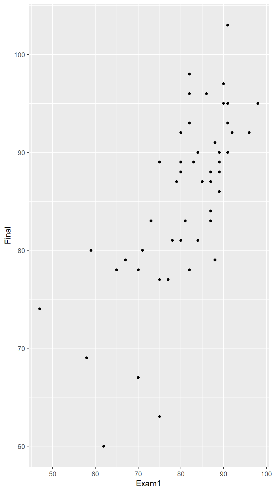
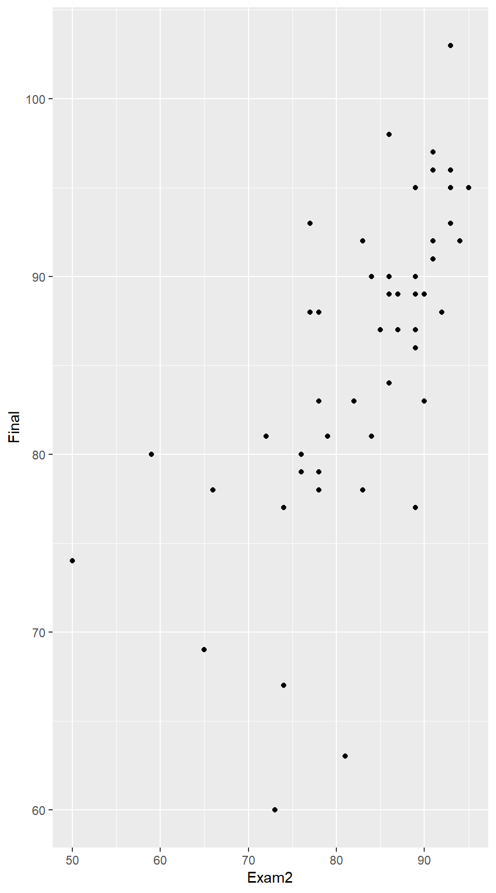
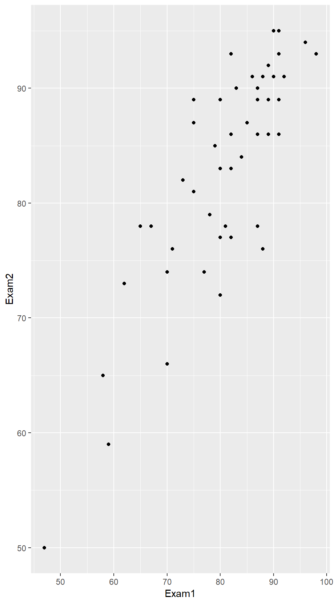

10 Multiple Regression
10.1 Multiple Predictors
Multiple Regression Model
Example 10.1
lm(Price ~ PPM + CostBW, data = InkjetPrinters)##
## Call:
## lm(formula = Price ~ PPM + CostBW, data = InkjetPrinters)
##
## Coefficients:
## (Intercept) PPM CostBW
## 89.20 58.10 -21.13Ink.Price <- makeFun(lm(Price ~ PPM + CostBW, data = InkjetPrinters))
Ink.Price(PPM = 3.0, CostBW = 3.7)## 1
## 185.3402Testing Individual Terms in a Model
Example 10.2
msummary(lm(Price ~ PPM + CostBW, data = InkjetPrinters))## Estimate Std. Error t value Pr(>|t|)
## (Intercept) 89.205 95.744 0.932 0.3645
## PPM 58.099 22.785 2.550 0.0207 *
## CostBW -21.125 9.341 -2.262 0.0371 *
##
## Residual standard error: 52.82 on 17 degrees of freedom
## Multiple R-squared: 0.6519, Adjusted R-squared: 0.6109
## F-statistic: 15.92 on 2 and 17 DF, p-value: 0.0001273Example 10.3
msummary(lm(Bodyfat ~ Weight + Height, data = BodyFat))## Estimate Std. Error t value Pr(>|t|)
## (Intercept) 71.48247 16.20086 4.412 2.65e-05 ***
## Weight 0.23156 0.02382 9.721 5.36e-16 ***
## Height -1.33568 0.25891 -5.159 1.32e-06 ***
##
## Residual standard error: 5.754 on 97 degrees of freedom
## Multiple R-squared: 0.494, Adjusted R-squared: 0.4836
## F-statistic: 47.35 on 2 and 97 DF, p-value: 4.48e-15Example 10.4
msummary(lm(Bodyfat ~ Weight + Height + Abdomen, data = BodyFat))## Estimate Std. Error t value Pr(>|t|)
## (Intercept) -56.1329 18.1372 -3.095 0.002580 **
## Weight -0.1756 0.0472 -3.720 0.000335 ***
## Height 0.1018 0.2444 0.417 0.677750
## Abdomen 1.0747 0.1158 9.279 5.27e-15 ***
##
## Residual standard error: 4.199 on 96 degrees of freedom
## Multiple R-squared: 0.7332, Adjusted R-squared: 0.7249
## F-statistic: 87.96 on 3 and 96 DF, p-value: < 2.2e-16ANOVA for a Multiple Regression Model
Example 10.6
Mod0 <- lm(Price ~ 1, data = InkjetPrinters)
Mod1 <- lm(Price ~ PPM, data = InkjetPrinters)
Mod2 <- lm(Price ~ PPM + CostBW, data = InkjetPrinters)
anova(Mod0, Mod1)## Analysis of Variance Table
##
## Model 1: Price ~ 1
## Model 2: Price ~ PPM
## Res.Df RSS Df Sum of Sq F Pr(>F)
## 1 19 136237
## 2 18 61697 1 74540 21.747 0.0001934 ***
## ---
## Signif. codes: 0 '***' 0.001 '**' 0.01 '*' 0.05 '.' 0.1 ' ' 1anova(Mod0, Mod2)## Analysis of Variance Table
##
## Model 1: Price ~ 1
## Model 2: Price ~ PPM + CostBW
## Res.Df RSS Df Sum of Sq F Pr(>F)
## 1 19 136237
## 2 17 47427 2 88809 15.917 0.0001273 ***
## ---
## Signif. codes: 0 '***' 0.001 '**' 0.01 '*' 0.05 '.' 0.1 ' ' 1Example 10.7
Mod0 <- lm(Price ~ 1, data = InkjetPrinters)
Mod1 <- lm(Price ~ PhotoTime + CostColor, data = InkjetPrinters)
msummary(Mod1)## Estimate Std. Error t value Pr(>|t|)
## (Intercept) 371.8920 66.8920 5.560 3.46e-05 ***
## PhotoTime 0.1038 0.3663 0.283 0.78036
## CostColor -18.7323 5.2821 -3.546 0.00248 **
##
## Residual standard error: 67.85 on 17 degrees of freedom
## Multiple R-squared: 0.4255, Adjusted R-squared: 0.3579
## F-statistic: 6.296 on 2 and 17 DF, p-value: 0.00899anova(Mod0, Mod1)## Analysis of Variance Table
##
## Model 1: Price ~ 1
## Model 2: Price ~ PhotoTime + CostColor
## Res.Df RSS Df Sum of Sq F Pr(>F)
## 1 19 136237
## 2 17 78264 2 57973 6.2963 0.00899 **
## ---
## Signif. codes: 0 '***' 0.001 '**' 0.01 '*' 0.05 '.' 0.1 ' ' 1Example 10.8
rsquared(lm(Price ~ PPM + CostBW, data = InkjetPrinters))## [1] 0.6518759rsquared(lm(Price ~ PhotoTime + CostColor, data = InkjetPrinters))## [1] 0.425531710.2 Checking Conditions for a Regression Model
Histogram/Dotplot/Boxplot of Residuals
Example 10.12
ink.model <- lm(Price ~ PPM, data = InkjetPrinters)
gf_dotplot( ~ resid(ink.model), dotsize = 2, binwidth = 2, stackratio = 4)
gf_point(resid(ink.model) ~ fitted(ink.model), dotsize = 0.5) #$# gf_lm()
Checking Conditions for a Multiple Regression Model
Example 10.13
body.model <- lm(Bodyfat ~ Weight + Abdomen, data = BodyFat)
msummary(body.model)## Estimate Std. Error t value Pr(>|t|)
## (Intercept) -48.77854 4.18098 -11.667 < 2e-16 ***
## Weight -0.16082 0.03101 -5.185 1.18e-06 ***
## Abdomen 1.04408 0.08918 11.707 < 2e-16 ***
##
## Residual standard error: 4.181 on 97 degrees of freedom
## Multiple R-squared: 0.7328, Adjusted R-squared: 0.7273
## F-statistic: 133 on 2 and 97 DF, p-value: < 2.2e-16gf_histogram( ~ resid(body.model), bins = 10)
gf_point(resid(body.model) ~ fitted(body.model), dotsize = 0.5) #$# gf_lm()
10.3 Using Multiple Regression
Choosing a Model
Example 10.14
msummary(lm(Bodyfat ~ Weight + Height + Abdomen + Age + Wrist, data = BodyFat))## Estimate Std. Error t value Pr(>|t|)
## (Intercept) -24.94157 20.77414 -1.201 0.2329
## Weight -0.08434 0.05891 -1.432 0.1555
## Height 0.05177 0.23849 0.217 0.8286
## Abdomen 0.96762 0.13040 7.421 5.15e-11 ***
## Age 0.07740 0.04868 1.590 0.1152
## Wrist -2.05797 0.72893 -2.823 0.0058 **
##
## Residual standard error: 4.074 on 94 degrees of freedom
## Multiple R-squared: 0.7542, Adjusted R-squared: 0.7411
## F-statistic: 57.67 on 5 and 94 DF, p-value: < 2.2e-16msummary(lm(Bodyfat ~ Weight + Abdomen + Age + Wrist, data = BodyFat))## Estimate Std. Error t value Pr(>|t|)
## (Intercept) -21.06107 10.52814 -2.000 0.04831 *
## Weight -0.07608 0.04474 -1.700 0.09231 .
## Abdomen 0.95069 0.10399 9.142 1.13e-14 ***
## Age 0.07854 0.04815 1.631 0.10620
## Wrist -2.06898 0.72350 -2.860 0.00521 **
##
## Residual standard error: 4.054 on 95 degrees of freedom
## Multiple R-squared: 0.754, Adjusted R-squared: 0.7437
## F-statistic: 72.81 on 4 and 95 DF, p-value: < 2.2e-16Example 10.15
msummary(lm(Bodyfat ~ Weight + Abdomen + Wrist, data = BodyFat))## Estimate Std. Error t value Pr(>|t|)
## (Intercept) -28.75313 9.49382 -3.029 0.003156 **
## Weight -0.12360 0.03425 -3.609 0.000491 ***
## Abdomen 1.04495 0.08720 11.983 < 2e-16 ***
## Wrist -1.46586 0.62722 -2.337 0.021513 *
##
## Residual standard error: 4.089 on 96 degrees of freedom
## Multiple R-squared: 0.7471, Adjusted R-squared: 0.7392
## F-statistic: 94.56 on 3 and 96 DF, p-value: < 2.2e-16Categorical Variables
Figure 10.9
gf_boxplot(Salary ~ Gender, group = ~Gender ,data = SalaryGender)
Example 10.16
msummary(lm(Salary ~ Gender, data = SalaryGender))## Estimate Std. Error t value Pr(>|t|)
## (Intercept) 41.631 5.796 7.183 1.34e-10 ***
## Gender 21.787 8.197 2.658 0.00918 **
##
## Residual standard error: 40.98 on 98 degrees of freedom
## Multiple R-squared: 0.06724, Adjusted R-squared: 0.05772
## F-statistic: 7.065 on 1 and 98 DF, p-value: 0.009181Example 10.17
msummary(lm(Salary ~ PhD, data = SalaryGender))## Estimate Std. Error t value Pr(>|t|)
## (Intercept) 33.863 4.518 7.496 2.97e-11 ***
## PhD 47.850 7.234 6.614 1.98e-09 ***
##
## Residual standard error: 35.28 on 98 degrees of freedom
## Multiple R-squared: 0.3086, Adjusted R-squared: 0.3016
## F-statistic: 43.75 on 1 and 98 DF, p-value: 1.979e-09confint(lm(Salary ~ PhD, data = SalaryGender))## 2.5 % 97.5 %
## (Intercept) 24.89789 42.82834
## PhD 33.49385 62.20556Accounting for Confounding Variables
Example 10.18
msummary(lm(Salary ~ Gender + PhD + Age, data = SalaryGender))## Estimate Std. Error t value Pr(>|t|)
## (Intercept) -6.9549 10.8364 -0.642 0.52253
## Gender 11.0944 6.7070 1.654 0.10136
## PhD 36.4305 7.2534 5.023 2.35e-06 ***
## Age 0.8474 0.2318 3.655 0.00042 ***
##
## Residual standard error: 32.78 on 96 degrees of freedom
## Multiple R-squared: 0.4154, Adjusted R-squared: 0.3972
## F-statistic: 22.74 on 3 and 96 DF, p-value: 3.308e-11Association between Explanatory Variables
Example 10.19
msummary(lm(Final ~ Exam1 + Exam2, data = StatGrades))## Estimate Std. Error t value Pr(>|t|)
## (Intercept) 30.8952 7.9973 3.863 0.000342 ***
## Exam1 0.4468 0.1606 2.783 0.007733 **
## Exam2 0.2212 0.1760 1.257 0.215086
##
## Residual standard error: 6.377 on 47 degrees of freedom
## Multiple R-squared: 0.5251, Adjusted R-squared: 0.5049
## F-statistic: 25.98 on 2 and 47 DF, p-value: 2.515e-08Figure 10.10
gf_point(Final ~ Exam1, data = StatGrades) #$# gf_lm()
gf_point(Final ~ Exam2, data = StatGrades) #$# gf_lm()
gf_point(Exam2 ~ Exam1, data = StatGrades) #$# gf_lm()